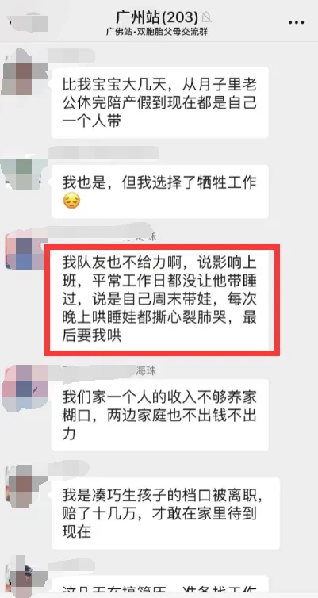
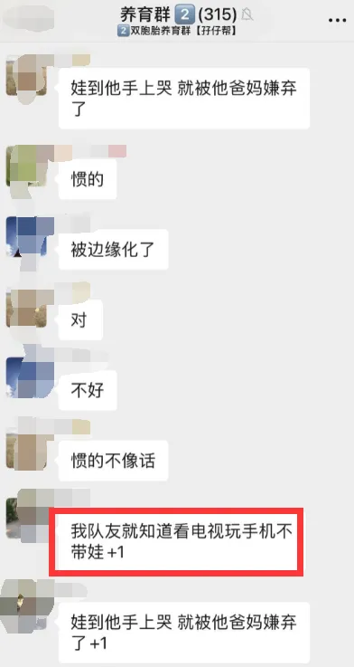
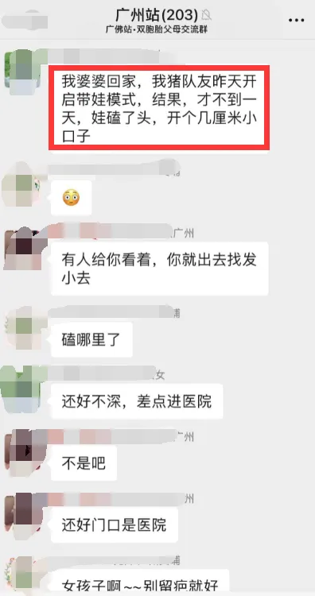
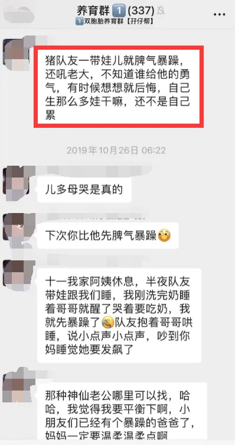

孖仔帮
公众号ID：twinsbang
关注
文|圆圈妈
网图|侵删
爽！
所以，今年的感恩节，特别来一篇感谢双胞胎的爸爸，顺便撒点狗粮一起庆祝感恩节。
撒狗粮前先官宣下第4期的双胞胎跳蚤市场开放了，如何找到入口呢？
公众号输入“赶集4”，即可获取入群邀请链接，仅限200人入群，先到先得哦。
1
#暖心感恩节#感谢双胞胎的爸爸们
就在早晨那会儿，圆圈爸率先起床，仅耗时半个小时，以一阵秋风扫落叶的速度把圆圈哥俩拖出了家门上学去，我还懒洋洋地摆着大字型，继续回笼觉。
这样的日子，对于家有双胞胎的妈妈来说，奢侈又惬意。
生活哪有什么岁月静好，只是有人在为你负重前行。
要特别感谢圆圈爸会带双胞胎，而且比我带得好，帮我扫清障碍，让我安安心心一觉睡到大清早，优哉游哉坐在电脑旁码字。
有人会说那你是矫情啊！
为什么要说感谢，难道带娃不是一个当爸应尽的责任吗？说得好像带孩子就是女人的工作，男人不需要操心一样。
是的，理论上是这样的！
然而...事实上，身边的妈妈朋友几乎都是这样，疯狂吐槽家中的队友，吐槽的点大多集中在以下几点：
不干家务活，只是把脏衣服放进洗衣机也不舍得放那种；偶尔干一次，还是虎头蛇尾，敷衍了事；从没有单独带娃超过4个小时，好不容易肯带娃了，不懂方法只会发火没耐心；给娃读个绘本，十分钟秒睡；至于什么早教亲子游戏很少参与。
再来看看我们双胞胎社群对爸爸们的吐槽，电视剧都不敢这样拍。
滑动查看更多
我相信，以上情形或多或少，同样发生在你们身边。我认为，宝爸带孩子确实天经地义，但是表达一下感谢也无可厚非吧，天经地义不代表不需要感谢！
夫妻之间，其实非常需要懂得感恩，看到对方的辛苦，感谢对方的付出；如果每个人都是理所当然的享受，只关注自己的辛苦，看不到别人的汗珠，那么我们就很容易变成怨妇。
每次看到社群里的妈妈们对宝爸的吐槽，我总是躲在屏幕下方摸着小心脏，无限感恩：“幸好，幸好！”前段时间很流行诈尸式育儿，直指狠批那些不带娃不作为的宝爸，我心里默默替圆圈爸喊冤：在我们家，貌似...我才是那个诈尸。
我这人，活得比较粗，就是那种养颗仙人掌也能枯死那种。让我养一对双胞胎？不，这道题我不会做，太难了。
你们眼中的母婴博主应该是既能hold住职场又能陪好孩子，娃儿养的又健康又科学还讲道理，真的令人羡慕，然而搁我这，竟然是另外一番模样。
受不了喂母乳的苦，只好喂配方奶，边喂边睡，摔碎了多少个奶瓶，银行卡支付明细可以作证；
营养均衡，色香味俱全的辅食不会弄，实在没耐心了，直接白粥加白糖来打发；
从来不敢一人带娃去打预防针，实在招架不住两人同时鬼哭狼嚎的惨状；
从来不敢一人带俩娃出去过，总是怕俩娃四处散开，不知道去追哪个娃；
总是控制不住情绪，不知道吼了多少次孩子了，甚至还打过小屁屁；
说好要高质量陪伴孩子们专心读绘本，其实还是拿起了手机放下了绘本让他们自己看。
…
有这么不靠谱的妈妈，圆圈哥俩也能健康成长，这不是奇迹，也不是神话，而是有圆圈爸在。
2
#暖心感恩节#感谢双胞胎的爸爸们
你问我，养育双胞胎具体有多难，三言两语讲不清，看圆圈爸这5年来，从当年的小鲜肉活生生熬成了现在的油腻大叔，就知道这过程该有多艰辛。
圆圈哥俩从小睡渣+奶渣一枚，睡觉从来不分白天黑夜，无数个夜晚，包括但不限于凌晨一点，两点，三点....是圆圈爸，挣扎着爬起来搞定。
他没有因为任何事情回避照顾俩娃，每天晚上我除了起来烧开水冲调奶粉，其他事情都是圆圈爸来做，喂夜奶，拍嗝，哄睡…
圆圈有严重的吐奶，吃一点奶就吐，吐了还不吃，好不容易吃了一点奶，还得拍嗝起码半个小时，否则保证吐奶，所以每次喂完都要抱很久才敢把他们放下，好不容易把这个哄睡了，才刚眯了一会儿，又开始准备迎接下一个娃的夜奶需求。
如果两个同时醒来一起哭闹，婆婆会过来搭把手，如果俩娃一前一后醒来，本来轮到我站岗的，他看我起不来也没忍心把我踹醒，很自觉地重复以上流程，尽量不打扰我。
圆圈哥俩是早产儿，体抗力差，经常生病，每次上医院就要验血常规，每次扎手指看到他们哭，我就哭得比他们还惨，第一次当妈，遇到孩子的问题，就是不理智，哪怕小小的感冒就能让我胡思乱想以为生了什么大病。
圆圈爸每次都能临危不惧，总是先把我安抚好，陪我一起带俩娃去挂号，看医生，做检查，从来都是亲自上阵，从不缺席。
要是遇到发烧，晚上每隔一个小时就爬起来量体温，只要娃醒来，就会哄他们喂水，吃药，用温水擦拭手脚；喂药时怕搞错，特别细心用本子记录下俩娃的吃药时间和剂量...
圆圈一岁前有小儿屏息综合征，一哭就会憋气，口唇发紫那种，医生说没有特效药，只能尽可能避免他们哭，所以只要圆圈一哭就得抱起来逗，我经常没有耐性，他们一哭我也想跟着哭，圆圈爸只好抱着我们娘仨一起哄。
稍大一点了，主要任务是陪玩，我除了会读绘本，其他高难度的项目如搭乐高，拼积木，做科学小实验，我都不擅长，而圆圈爸总能耐着性子，陪他们玩出很多新花样。
2岁多那会儿，实在找不到人来带圆圈了，他果断辞职在家当起了全职奶爸，一直到我回归家庭后，他才重返职场。
即便是白天忙于工作，晚上他依然会早早下班替我带一会圆圈，因为他当过全职奶爸，非常清楚那种一整天围着两个娃连轴转的滋味，哪怕是有单独5分钟的片刻宁静，都有一种大赦天下的满足感。
周六日，只要不是带娃，不是抛夫弃子，随便我该干嘛干嘛去，因为他知道，被俩娃24小时连环轰炸后，亟需去一个没有娃的地方放飞下自我。
渐渐地...圆圈也习惯了，凡事都找爸爸就对了。诸如托马斯小火车没电了，想要听故事，小车车摔坏了，做家庭作业，渴了饿了哭了...通通找爸爸！
我是觉得耳根子清净了，蛮爽了，但是甩手掌柜也有副作用的，最直接的效果就是，每次我和圆圈爸有争执时，他们俩全都站在圆圈爸那边帮腔：“妈妈，你不要对你老公那么凶嘛！”
…两个混小子，果然是皮夹克两件！
3
#暖心感恩节#感谢双胞胎的爸爸们
总结：有一个会带双胞胎的奶爸是什么样的体验，除了一个爽字，更多的是，一个困扰我多年的问题，终于有答案了。
经常被人问起还生二胎吗？我第一反应不是猛摇头，而是看着圆圈爸，意味深长地回答：“如果有人带，可以有！”
真心觉得生对双胞胎没什么难度，不就是大吐三个月，猛吃三个月，失眠三个月，最后来一波10级阵痛，俩娃娃就出来了。
而养育双胞胎才叫千锤百炼的开始…倘若没有圆圈爸在，会带双胞胎，可能哪面墙比较硬，我就往那里钻。
写到最后，想对新手妈妈说的话：养育双胞胎很讲究团队精神，即便是铁打的金刚也抵不住两个小人儿双倍的破坏能力，但凡是可以调用的人力资源，都应妥善地优化好，分配好，为我所用，为双胞胎孩子们服务；如果婆婆不靠谱，亲妈不咋滴，请记住，还有宝爸。
像宝爸这种未开发，潜力巨大的宝藏资源是完全可以充分利用的，只要善于挖掘，善于调教即可！（下一篇会写一个攻略）除了不能替你十月怀胎，替你承受10级阵痛，其他皆有可能大作为。
当你一边嘴上说宝爸带娃理所当然，一边又不给宝爸带娃的机会时，别忘了：没有人天生会照顾孩子，第一次当妈妈，要分得清，拎得起，该宝爸做的就让他做，不要一开始就大包大揽；与宝爸共同学习，共同实践才是上上策，只要心思用到了，是不可能学不会的。
所以，适当放手，多给点机会让宝爸表现下呗。
如果抱怨吐槽没用，不妨多一点肯定，多一点表扬，多一点感谢吧。
我的撒狗粮就撒到这里了，如果你家也有这样会带双胞胎的奶爸，请在留言区大声秀出来哦！
-END-
今日互动话题
#暖心感恩节#
拒绝吐槽，请说感谢的话
评论区聊一聊呗！
微信公众号：孖仔帮
ID : twinsbang
专注双胞胎孕育，养育，教育经验分享
扫码关注我们
点一下你会更好看耶



